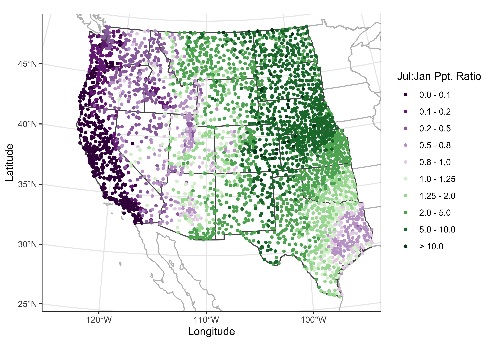

Maps in R
NOTE: This page has been revised for Spring 2020, but may undergo further edits.
1 Introduction
One extremely useful feature of R for analyzing geographical data is its ability to provide maps of data in the same computing environment that the data analysis is being performed in, and moreover, to read, manipulate and analyze data with explicitly spatial coordinate information. This facility for handling spatial data was built into S relatively early on, and is now implemented three ways, through the following packages:
maps, which contains a database of world, country (and for the U.S.) state outlines, and includes functions (in themapprojpackage) for doing projections (or “spatial transforms”);sp(“spatial”), which provides a format for spatial data in R, and a number of functions for its input (through thergdalpackage), output and display (together constituting a set of “classes and methods”), thergeospackage, which implements many of the spatial topology functions that formerly required a full suite of GIS software;sfwhich implements the “simple features” approach of representing spatial objects and their geometries [https://r-spatial.github.io/sf/index.html], and uses the “built-in”data.frame(ortibble) structure in R to store and manipulate data, while linking to the GEOS, GDAL, and PROJ libraries directly. The ’sf` package now seems to be the main focus for development of geospatial analyses and mapping in R.
Two other projects/packages are aimed at handling spatial data. These include:
raster(and the relatedrasterVispackage, which implementslattice-type graphics) for handing raster data [https://rspatial.org/raster/index.html] (and which is accompanied by theterrapackage, which is “conceived as a replacement” for raster [https://rspatial.org/terra/index.html] )stars, which considers all data to be both spatial and temporal, with those that aren’t thought of as special cases, as opposed to typical [https://r-spatial.github.io/stars/] which is designed to handle spatiotemporal arrays or datacubes.
The main place to go to get an overview of the kinds and capabilities of the spatial packages in R is the Spatial Task Views on CRAN
2 Maps in R – example data and setup
The examples here use several libraries, datasets, and shapefiles that should be downloaded and/or installed, and read in before proceeding.
The easiest way to get most of these data files and shape-file components, is to download a copy of the workspace geog495.RData and “load” it, or read it in. (Some of the larger files are not included.) Otherwise, all of them are available to download from the Datasets on the Other tab of the course web page.
Right-click on the above link, and save it to your working folder. (If you’ve forgotten where that is, type getwd() on the command line). Then read it in to R
2.1 Shapefiles as spatial or simple-features objects
The difference in the internal (to R) representation of spatial data (as exemplified by a shapefile) by the sp and sf packages can be seen by reading a typical shapefile (polygon outlines of western U.S. states) by both
Load some libraries:
## rgeos version: 0.5-2, (SVN revision 621)
## GEOS runtime version: 3.7.2-CAPI-1.11.2
## Linking to sp version: 1.3-1
## Polygon checking: TRUE## rgdal: version: 1.4-8, (SVN revision 845)
## Geospatial Data Abstraction Library extensions to R successfully loaded
## Loaded GDAL runtime: GDAL 2.4.2, released 2019/06/28
## Path to GDAL shared files: /Library/Frameworks/R.framework/Versions/3.6/Resources/library/rgdal/gdal
## GDAL binary built with GEOS: FALSE
## Loaded PROJ.4 runtime: Rel. 5.2.0, September 15th, 2018, [PJ_VERSION: 520]
## Path to PROJ.4 shared files: /Library/Frameworks/R.framework/Versions/3.6/Resources/library/rgdal/proj
## Linking to sp version: 1.3-2## Linking to GEOS 3.7.2, GDAL 2.4.2, PROJ 5.2.0Note that the sp requires the rgeos and rgdal packages for manipulating and reading spatial data, while the sf package links to compiled versions of the GEOS, GDAL, and PROJ5 libraries.
Read the shapefile as an sp object. (The class() function tells us what kind of object it is, and head() lists the first few lines as well as some information about the object.)
Load a couple of other libraries that will be used here:
# read a shapefile
shapefile <- "/Users/bartlein/Documents/geog495/data/shp/wus.shp"
wus_sp <- readOGR(shapefile)## OGR data source with driver: ESRI Shapefile
## Source: "/Users/bartlein/Documents/geog495/data/shp/wus.shp", layer: "wus"
## with 17 features
## It has 1 fields## [1] "SpatialPolygonsDataFrame"
## attr(,"package")
## [1] "sp"And now using the st_read() function in the sf() package:
## Reading layer `wus' from data source `/Users/bartlein/Documents/geog495/data/shp/wus.shp' using driver `ESRI Shapefile'
## Simple feature collection with 17 features and 1 field
## geometry type: MULTIPOLYGON
## dimension: XY
## bbox: xmin: -124.6813 ymin: 25.9378 xmax: -93.53536 ymax: 49.00508
## CRS: 4326## [1] "sf" "data.frame"## Simple feature collection with 6 features and 1 field
## geometry type: MULTIPOLYGON
## dimension: XY
## bbox: xmin: -124.3834 ymin: 31.34652 xmax: -94.58387 ymax: 49.00508
## CRS: 4326
## ID geometry
## 1 arizona MULTIPOLYGON (((-114.6374 3...
## 2 california MULTIPOLYGON (((-120.006 42...
## 3 colorado MULTIPOLYGON (((-102.0552 4...
## 4 idaho MULTIPOLYGON (((-117.0266 4...
## 5 kansas MULTIPOLYGON (((-94.63544 3...
## 6 montana MULTIPOLYGON (((-104.0491 4...It’s easy to see that sf objects “store” data as regular R dataframes, while sp objects could be thought of as being “like” dataframes. This difference has implications for working with the objects using other R functions.
3 Some simple maps
The following examples demonstrates the ability of R to make some simple maps.
3.1 Oregon county census data – attribute data in the orcounty.shp shape file
Read an Oregon county data set as a shape file, with county outlines and some attribute data from the old 1990 U.S. Census.
shapefile <- "/Users/bartlein/Documents/geog495/data/shp/orcounty.shp"
orcounty_sf <- st_read(shapefile)## Reading layer `orcounty' from data source `/Users/bartlein/Documents/geog495/data/shp/orcounty.shp' using driver `ESRI Shapefile'
## Simple feature collection with 36 features and 52 fields
## geometry type: POLYGON
## dimension: XY
## bbox: xmin: -124.5584 ymin: 41.98779 xmax: -116.4694 ymax: 46.23626
## CRS: 4326## [1] "NAME" "STATE_NAME" "STATE_FIPS" "CNTY_FIPS" "FIPS" "AREA" "POP1990"
## [8] "POP1997" "POP90_SQMI" "HOUSEHOLDS" "MALES" "FEMALES" "WHITE" "BLACK"
## [15] "AMERI_ES" "ASIAN_PI" "OTHER" "HISPANIC" "AGE_UNDER5" "AGE_5_17" "AGE_18_29"
## [22] "AGE_30_49" "AGE_50_64" "AGE_65_UP" "NEVERMARRY" "MARRIED" "SEPARATED" "WIDOWED"
## [29] "DIVORCED" "HSEHLD_1_M" "HSEHLD_1_F" "MARHH_CHD" "MARHH_NO_C" "MHH_CHILD" "FHH_CHILD"
## [36] "HSE_UNITS" "VACANT" "OWNER_OCC" "RENTER_OCC" "MEDIAN_VAL" "MEDIANRENT" "UNITS_1DET"
## [43] "UNITS_1ATT" "UNITS2" "UNITS3_9" "UNITS10_49" "UNITS50_UP" "MOBILEHOME" "NO_FARMS87"
## [50] "AVG_SIZE87" "CROP_ACR87" "AVG_SALE87" "geometry"Plot the data, first including the attributes, and then just the outline or “geometry” of the shapefile:


The first plot is not very useful, but illustrates the contents of the file.
Now make a map of the population in 1990 using equal-frequency class intervals.
# equal-frequency class intervals -- chunk 1
plotvar = "POP1990"
plotvals <- orcounty_sf$POP1990
title <- "Population 1990"
subtitle <- "Quantile (Equal-Frequency) Class Intervals"
nclr <- 8
plotclr <- brewer.pal(nclr,"BuPu")
class <- classIntervals(plotvals, nclr, style="quantile")
colcode <- findColours(class, plotclr)This first chunk of code (above) just does some setting up, while this next chunk actually produces the map:
# chunk 2
plot(orcounty_sf[plotvar], col=colcode, xlim=c(-124.5, -115), ylim=c(42,47))
title(main=title, sub=subtitle)
legend("bottomright", legend=names(attr(colcode, "table")),
fill=attr(colcode, "palette"), cex=1.0, bty="n")Here’s what’s going on. First, a temporary variable plotvar is created by copying the values of orcounty.sh@data$POP1990 (from “attribute” data in the shape file). Next the number of colors is set nclr <- 8 and a set of appropriate colors is generated using the brewer.pal() function. The classIntervals() function assigns the individual observations of plotvar to one of nclr equal-frequency class intervals, and then the findColours() function (note the Canadian/U.K. spelling) determines the color for each observation (each county).
In the second block, the first use of the plot() function plots the shapefile within an appropriate range of latitudes and longitudes, while the second use plots colored polygons on top. The rest of block 2 adds a title and legend. It’s a little clunky, and the placement of labels are not great, but it’s quick.
Here’s an equal-interval (size) class interval map:
# equal-interval class intervals -- chunk 1
plotvar = "POP1990"
plotvals <- orcounty_sf$POP1990
title <- "Population 1990"
subtitle <- "Equal-size Class Intervals"
nclr <- 8
plotclr <- brewer.pal(nclr,"BuPu")
class <- classIntervals(plotvals, nclr, style="equal")
colcode <- findColours(class, plotclr)
# chunk 2
plot(orcounty_sf[plotvar], col=colcode, xlim=c(-124.5, -115), ylim=c(42,47))
title(main=title, sub=subtitle)
legend("bottomright", legend=names(attr(colcode, "table")),
fill=attr(colcode, "palette"), cex=1.0, bty="n")
A ggplot2 version of the above, can be constructed as follows:
pal <- brewer.pal(9, "Greens") #[3:6]
ggplot() +
geom_sf(data = orcounty_sf, aes(fill = POP1990)) +
scale_fill_gradientn(colors = pal) +
coord_sf() + theme_bw()
3.2 Symbol plot: Oregon climate station data
Here’s a map of the Oregon climate station data with the data coming from the orstationc.csv file, and the basemap from orotl.shp
# symbol plot -- equal-interval class intervals
plotvals <- orstationc$tann
title <- "Oregon Climate Station Data -- Annual Temperature"
subtitle <- "Equal-Interval Class Intervals"
nclr <- 8
plotclr <- brewer.pal(nclr,"PuOr")
plotclr <- plotclr[nclr:1] # reorder colors
class <- classIntervals(plotvals, nclr, style="equal")
colcode <- findColours(class, plotclr)
plot(st_geometry(orcounty_sf), xlim=c(-124.5, -115), ylim=c(42,47))
points(orstationc$lon, orstationc$lat, pch=16, col=colcode, cex=2)
points(orstationc$lon, orstationc$lat, cex=2)
title(main=title, sub=subtitle)
legend(-117, 44, legend=names(attr(colcode, "table")),
fill=attr(colcode, "palette"), cex=1.0, bty="n")
3.3 Oregon climate station data – locations and data in shape file
Here’s a third map with the Oregon climate station data locations and data coming from the shape file:
# symbol plot -- equal-interval class intervals
shapefile <- "/Users/bartlein/Documents/geog495/data/shp/orstations.shp"
orstations_sf <- st_read(shapefile)## Reading layer `orstations' from data source `/Users/bartlein/Documents/geog495/data/shp/orstations.shp' using driver `ESRI Shapefile'
## Simple feature collection with 92 features and 12 fields
## geometry type: POINT
## dimension: XY
## bbox: xmin: -124.567 ymin: 42.05 xmax: -116.967 ymax: 46.15
## CRS: 4326

# symbol plot -- fixed-interval class intervals
plotvals <- orstations_sf$pann
title <- "Oregon Climate Station Data -- Annual Precipitation"
subtitle <- "Fixed-Interval Class Intervals"
nclr <- 5
plotclr <- brewer.pal(nclr+1,"BuPu")[2:(nclr+1)]
class <- classIntervals(plotvals, nclr, style="fixed",
fixedBreaks=c(0,200,500,1000,2000,9999))
colcode <- findColours(class, plotclr)
# block 2
plot(st_geometry(orcounty_sf), xlim=c(-124.5, -115), ylim=c(42,47))
points(orstations_sf$lon, orstations_sf$lat, pch=16, col=colcode, cex=2)
points(orstations_sf$lon, orstations_sf$lat, cex=2)
title(main=title, sub=subtitle)
legend(-117, 44, legend=names(attr(colcode, "table")),
fill=attr(colcode, "palette"), cex=1.0, bty="n")Notice how the expression orstations_sf$pann refers to a specific variable (pann), contained in the data attribute of the shape file. Some other things: This map uses fixed (ahead of making the map) class intervals (fixedBreaks) and the two points() function “calls”: the first plots a colored dot (col=colcode), and the second then just plots a unfilled dot (in black) to put a nice line around each point to make the symbol more obvious.
Here’s a ggplot2 version of a fixed class-interval map:
cutpts <- c(0,200,500,1000,2000,9999)
plot_factor <- factor(findInterval(orstations_sf$pann, cutpts))
nclr <- 5
plotclr <- brewer.pal(nclr+1,"BuPu")[2:(nclr+1)]
ggplot() +
geom_sf(data = orcounty_sf, fill=NA) +
geom_point(aes(orstations_sf$lon, orstations_sf$lat, color = plot_factor), size = 5.0, pch=16) +
scale_colour_manual(values=plotclr, aesthetics = "colour",
labels = c("0 - 200", "200 - 500", "500 - 1000", "1000 - 2000", "> 2000"),
name = "Ann. Precip.", drop=TRUE) +
labs(x = "Longitude", y = "Latitude") +
theme_bw()3.4 The bubble plot (on a map)
We tend to be influenced more by the simple area of an object on the page or screen than by whatever is being plotted. For example, for the 1990 county population, plotted as polygons with equal-width class intervals Multnomah county, the most populated one, despite being plotted in a dark color, gets kind of dominated by the larger, less populated counties that surround it. The eastern Oregon counties, the least populated, occupy the greatest area on the map. The solution is the bubble plot:
## Warning in st_centroid.sf(orcounty_sf): st_centroid assumes attributes are constant over geometries of x## Warning in st_centroid.sfc(st_geometry(x), of_largest_polygon = of_largest_polygon): st_centroid does not
## give correct centroids for longitude/latitude dataggplot() +
geom_sf(data = orcounty_sf) +
geom_sf(data = orcounty_cntr, aes(size = AREA), color="purple") +
scale_size_area(max_size = 15) +
labs(x = "Longitude", y = "Latitude", title = "Area") +
theme_bw()
Here the size of each symbol is calculated using the county population using the code at the end of the first block, and then the symbol is plotted at the centroid of each county, which is located using the st_centroid() function. Note that the symbol sizes could be made vary continuously.
4 An example – Western U.S. precipitation ratios
The following example illustrates a fairly realistic task, producing a projected map of nicely scaled precipitaion-ratio (July vs. January) values for weather stations across the West. Such precipitation ratios illustrate the seasonality (e.g. summer vs. winter) of precipitation, and cancel out the strong effect of elevation on precipitation amounts. (High-elevation stations in general have higher precipitation than low-elevations stations, and that effect would otherwise overprint the large-scale pattern of precipitation seasonality.) The precipitation data are stored in a .csv file, and the example illustrates the creation of suitable base map, and the projection of both the base map and the precipitation data.
4.1 Base maps
Here the base map will be extracted from the maps package data base. (An alternative source might be the “Natural Earth” shapefiles, accessible through the rnaturalearth package.) Begin by loading the maps package:
The map() function extracts the outlines for, in this case the western U.S. states listed in the regions argument of the function.
wus_map <- map("state", regions=c("washington", "oregon", "california", "idaho", "nevada",
"montana", "utah", "arizona", "wyoming", "colorado", "new mexico", "north dakota", "south dakota",
"nebraska", "kansas", "oklahoma", "texas"), plot = FALSE, fill = FALSE)The class() function indicates the class of the data set, in this case “map” and the contents of the object can be listed using the str() function:
## [1] "map"## List of 4
## $ x : num [1:3323] -115 -115 -115 -115 -115 ...
## $ y : num [1:3323] 35 35.1 35.1 35.2 35.2 ...
## $ range: num [1:4] -124.7 -93.5 25.9 49
## $ names: chr [1:21] "arizona" "california" "colorado" "idaho" ...
## - attr(*, "class")= chr "map"The “geometry” of the data can be seen by plotting it, as a scatter plot:

What we want, however is a base map of class sf (i.e. a simple-features object). That can be done by wrapping the map() by the st_as_sf() function:
wus_sf <- st_as_sf(map("state", regions=c("washington", "oregon", "california", "idaho", "nevada",
"montana", "utah", "arizona", "wyoming", "colorado", "new mexico", "north dakota", "south dakota",
"nebraska", "kansas", "oklahoma", "texas"), plot = FALSE, fill = TRUE))It can be verified that the class of wus_sf is indeed a simple feature sf as well as a standard dataframe, data.frame:
## [1] "sf" "data.frame"Plot wus_sf

and just the geometry (i.e. outlines)

The contents of the object can be listed using head(), which describes the object, and as in its usual application, lists the first few lines:
## Simple feature collection with 6 features and 1 field
## geometry type: MULTIPOLYGON
## dimension: XY
## bbox: xmin: -124.3834 ymin: 31.34652 xmax: -94.58387 ymax: 49.00508
## CRS: EPSG:4326
## ID geom
## 1 arizona MULTIPOLYGON (((-114.6374 3...
## 2 california MULTIPOLYGON (((-120.006 42...
## 3 colorado MULTIPOLYGON (((-102.0552 4...
## 4 idaho MULTIPOLYGON (((-117.0266 4...
## 5 kansas MULTIPOLYGON (((-94.63544 3...
## 6 montana MULTIPOLYGON (((-104.0491 4...Here’s a ggplot2 map:
Similar basemaps with the outlines of the U.S., Canada, and Mexico, and of the coterminous U.S. can also be extracted.
na_sf <- st_as_sf(map("world", regions=c("usa", "canada", "mexico"), plot = FALSE, fill = TRUE))
conus_sf <- st_as_sf(map("state", plot = FALSE, fill = TRUE))Because na_sf and conus_sf are data.frames, they can be combined in the usual way, using rbind():
Verify that the objects are indeed combined:
## Simple feature collection with 6 features and 1 field
## geometry type: MULTIPOLYGON
## dimension: XY
## bbox: xmin: -178.1945 ymin: 14.54541 xmax: 179.78 ymax: 83.11611
## CRS: EPSG:4326
## ID geom
## 1 Canada MULTIPOLYGON (((-59.7876 43...
## 2 Mexico MULTIPOLYGON (((-91.68369 1...
## 3 USA MULTIPOLYGON (((-155.5813 1...
## 4 alabama MULTIPOLYGON (((-87.46201 3...
## 5 arizona MULTIPOLYGON (((-114.6374 3...
## 6 arkansas MULTIPOLYGON (((-94.05103 3...Plot the combined object:
4.2 Precipiation-ratio data
The precipitation-ratio data can be read in the usual way:
shapefile <- "/Users/bartlein/Documents/geog495/data/csv/wus_pratio.csv"
wus_pratio <- read.csv(shapefile)
names(wus_pratio)## [1] "lat" "lon" "elev" "pjanpann" "pfebpann" "pmarpann" "paprpann" "pmaypann" "pjunpann"
## [10] "pjulpann" "paugpann" "pseppann" "poctpann" "pnovpann" "pdecpann"Get the July-to-January precipitation ratio. (The input values are all ratios themselves of the value for a particular month to the annual value. Dividing the July ratio by the January ratio cancles out annual precipitation, and gives us the ratio we want.)
# get July to annual precipitation ratios
wus_pratio$pjulpjan <- wus_pratio$pjulpann/wus_pratio$pjanpann # pann values cancel out
head(wus_pratio)## lat lon elev pjanpann pfebpann pmarpann paprpann pmaypann pjunpann pjulpann paugpann
## 1 42.1833 -119.9000 1397 0.0987 0.1073 0.1030 0.1030 0.0901 0.0730 0.0429 0.0429
## 2 42.9667 -120.0000 1320 0.0610 0.0563 0.0939 0.1080 0.1362 0.1033 0.0704 0.0798
## 3 44.4000 -123.7500 70 0.1533 0.1348 0.1121 0.0756 0.0468 0.0266 0.0086 0.0129
## 4 44.9167 -120.7333 866 0.1186 0.0904 0.0904 0.0791 0.0989 0.0734 0.0311 0.0424
## 5 42.2500 -123.1667 391 0.1547 0.1406 0.1141 0.0781 0.0469 0.0250 0.0078 0.0172
## 6 45.7167 -120.2000 84 0.1522 0.1087 0.0826 0.0739 0.0739 0.0391 0.0217 0.0304
## pseppann poctpann pnovpann pdecpann pjulpjan
## 1 0.0515 0.0687 0.1245 0.1030 0.43465046
## 2 0.0610 0.0845 0.0798 0.0704 1.15409836
## 3 0.0322 0.0657 0.1584 0.1730 0.05609915
## 4 0.0537 0.0678 0.1356 0.1158 0.26222597
## 5 0.0234 0.0703 0.1641 0.1562 0.05042017
## 6 0.0478 0.0739 0.1348 0.1609 0.14257556To produce a map with “nice” class-interval coloring of the symbols, we’ll want to create a factor using the findInterval() function from the classInt package. This is done by first specifiying the cutpoints (here a quasi-logrithmic scale appropriate for ratios), then appying the findInterval() function and the factor() function.
# convert the (continous) preciptation ratio to a factor
cutpts <- c(0.0, .100, .200, .500, .800, 1.0, 1.25, 2.0, 5.0, 10.0, 9999.0)
pjulpjan_factor <- factor(findInterval(wus_pratio$pjulpjan, cutpts))
head(cbind(wus_pratio$pjulpjan, pjulpjan_factor, cutpts[pjulpjan_factor]))## pjulpjan_factor
## [1,] 0.43465046 3 0.2
## [2,] 1.15409836 6 1.0
## [3,] 0.05609915 1 0.0
## [4,] 0.26222597 3 0.2
## [5,] 0.05042017 1 0.0
## [6,] 0.14257556 2 0.14.3 Map the unprojected data
Map the outlines, and overlay the point data:
## ggplot2 map of pjulpjan
ggplot() +
geom_sf(data = na2_sf, fill=NA, color="gray") +
geom_sf(data = wus_sf, fill=NA) +
geom_sf(data = wus_sf, fill=NA, color="black") +
geom_point(aes(wus_pratio$lon, wus_pratio$lat, color = pjulpjan_factor), size = 1.0 ) +
scale_color_brewer(type = "div", palette = "PRGn", aesthetics = "color", direction = 1,
labels = c("0.0 - 0.1", "0.1 - 0.2", "0.2 - 0.5", "0.5 - 0.8", "0.8 - 1.0",
"1.0 - 1.25", "1.25 - 2.0", "2.0 - 5.0", "5.0 - 10.0", "> 10.0"),
name = "Jul:Jan Ppt. Ratio") +
labs(x = "Longitude", y = "Latitude") +
coord_sf(crs = st_crs(wus_sf), xlim = c(-125, -90), ylim = c(25, 50)) +
theme_bw()Note the build-up of the differnt layers on the map: First, the combined (na2_sf) outlines of the U.S. Canada and Mexico and the coterminous U.S. states are plotted in gray, then the specific outlines of the western U.S. states are added in black (to emphasize the focus on the western U.S.), and finally the precipitation ratios are plotted as symbols on top. The map clearly shows the spatial variations in precipitation seasonality: winer wet along the west coast and intermountain West, and summer wet over the Great Plains, and eastern Rocky Mtns. The interesting regions on the map are those where there is mixture or sharp contrast in precipitation seasonality.
4.4 A projected map
The above map is ok, but by not being equal-area, it would not support well the task of estimating the relative areas of summer-wet and winter-wet precipitation regimes. Projection, or spatial transformation is easily done with spatial features. First, the st_crs() function is used to specify the coordinate reference system (CRS) for the desired projection (in this case a Labert equal-area projection, centered on 30 N and 110 W), then the st_transform() funtion does the projection.
# projection of wus_sf
laea = st_crs("+proj=laea +lat_0=30 +lon_0=-110") # Lambert equal area
wus_sf_proj = st_transform(wus_sf, laea)Here is the projected wus_sf object, with a graticule overlaid:
plot(st_geometry(wus_sf_proj), axes = TRUE)
plot(st_geometry(st_graticule(wus_sf_proj)), axes = TRUE, add = TRUE)Note that the coorinates of the map are now in metres.
Here’s a nicer map, with the graticule labelled:

Project the other outlines.
# project the other outlines
na_sf_proj = st_transform(na_sf, laea)
conus_sf_proj = st_transform(conus_sf, laea)
na2_sf_proj = st_transform(na2_sf, laea)Now project the precipitation ratio data. First, verify that the data currently are just a simple dataframe:
## [1] "data.frame"We can convert it to an sf object using the st_as_sf() function, specifying the names of the variables that provide the coordinates of the points.
Verify that wus_pratio_sf is an sf object now.
## [1] "sf" "data.frame"Get as summary of the object:
## Simple feature collection with 3728 features and 14 fields
## geometry type: POINT
## dimension: XY
## bbox: xmin: -124.5667 ymin: 25.9 xmax: -93.5667 ymax: 49
## CRS: NA
## First 10 features:
## elev pjanpann pfebpann pmarpann paprpann pmaypann pjunpann pjulpann paugpann pseppann poctpann
## 1 1397 0.0987 0.1073 0.1030 0.1030 0.0901 0.0730 0.0429 0.0429 0.0515 0.0687
## 2 1320 0.0610 0.0563 0.0939 0.1080 0.1362 0.1033 0.0704 0.0798 0.0610 0.0845
## 3 70 0.1533 0.1348 0.1121 0.0756 0.0468 0.0266 0.0086 0.0129 0.0322 0.0657
## 4 866 0.1186 0.0904 0.0904 0.0791 0.0989 0.0734 0.0311 0.0424 0.0537 0.0678
## 5 391 0.1547 0.1406 0.1141 0.0781 0.0469 0.0250 0.0078 0.0172 0.0234 0.0703
## 6 84 0.1522 0.1087 0.0826 0.0739 0.0739 0.0391 0.0217 0.0304 0.0478 0.0739
## 7 525 0.1255 0.0976 0.1056 0.0857 0.0777 0.0458 0.0259 0.0299 0.0438 0.0737
## 8 859 0.1197 0.0940 0.0883 0.0883 0.1054 0.0684 0.0342 0.0399 0.0456 0.0741
## 9 3 0.1431 0.1173 0.1097 0.0733 0.0487 0.0381 0.0170 0.0182 0.0387 0.0833
## 10 1284 0.1287 0.0951 0.0951 0.0690 0.0784 0.0709 0.0429 0.0448 0.0466 0.0522
## pnovpann pdecpann pjulpjan geometry
## 1 0.1245 0.1030 0.43465046 POINT (-119.9 42.1833)
## 2 0.0798 0.0704 1.15409836 POINT (-120 42.9667)
## 3 0.1584 0.1730 0.05609915 POINT (-123.75 44.4)
## 4 0.1356 0.1158 0.26222597 POINT (-120.7333 44.9167)
## 5 0.1641 0.1562 0.05042017 POINT (-123.1667 42.25)
## 6 0.1348 0.1609 0.14257556 POINT (-120.2 45.7167)
## 7 0.1434 0.1414 0.20637450 POINT (-122.7167 42.2167)
## 8 0.1254 0.1168 0.28571429 POINT (-120.7167 44.75)
## 9 0.1566 0.1548 0.11879804 POINT (-123.8833 46.15)
## 10 0.1325 0.1418 0.33333333 POINT (-118.4833 44.5667)Note that the object has a new column, geometry. Note also that the object does not have a CRS. (The attributes epsg and proj4string are NA.) Set the CRS (knowing that the data are currently unprojected, i.e. the CRS is longtude and latitude.
Verify that the CRS has been set:
## Coordinate Reference System:
## User input: +proj=longlat
## wkt:
## GEOGCS["WGS 84",
## DATUM["unknown",
## SPHEROID["WGS84",6378137,298.257223563]],
## PRIMEM["Greenwich",0],
## UNIT["degree",0.0174532925199433]]Now project the point data:
# projection of wus_pratio_sf
laea = st_crs("+proj=laea +lat_0=30 +lon_0=-110") # Lambert equal area
wus_pratio_sf_proj = st_transform(wus_pratio_sf, laea)# plot the projected points
plot(st_geometry(wus_pratio_sf_proj), pch=16, cex=0.5, axes = TRUE)
plot(st_geometry(st_graticule(wus_pratio_sf_proj)), axes = TRUE, add = TRUE)Map the projected data:
# ggplot2 map of pjulpman projected
ggplot() +
geom_sf(data = na2_sf_proj, fill=NA, color="gray") +
geom_sf(data = wus_sf_proj, fill=NA) +
geom_sf(data = wus_pratio_sf_proj, aes(color = pjulpjan_factor), size = 1.0 ) +
scale_color_brewer(type = "div", palette = "PRGn", aesthetics = "color", direction = 1,
labels = c("0.0 - 0.1", "0.1 - 0.2", "0.2 - 0.5", "0.5 - 0.8", "0.8 - 1.0",
"1.0 - 1.25", "1.25 - 2.0", "2.0 - 5.0", "5.0 - 10.0", "> 10.0"),
name = "Jul:Jan Ppt. Ratio") +
labs(x = "Longitude", y = "Latitude") +
coord_sf(crs = st_crs(wus_sf_proj), xlim = c(-1400000, 1900000), ylim = c(-400000, 2150000)) +
theme_bw()
5 Readings
In addtion to the web pages listed above, simple features and mapping are discussed in the following Bookdown eBooks:
Lovelace, R., J. Nowosad, and J. Muenchow, 2019, Geocomputation with R [https://bookdown.org/robinlovelace/geocompr/]
Pebesma, E. and R. Bivand, 2020, Spatial Data Science [https://keen-swartz-3146c4.netlify.com]
Also worth looking chapter 3 in Bivand, R., et al. (2013) Applied Spatial Data Analysis with R, 2nd edition, which describes the sp package approach to mapping. (Search for the eBook version on the UO Library page [http://library.uoregon.edu]) (The whole book is worth looking at, but Ch. 3 is the key reference for the display of spatial data (i.e. mapping) using the older sp package.)